Hate crime rates across U.S. states are not random; they follow a clear geographic and demographic pattern. But interpreting that pattern requires confronting a fundamental methodological problem: the states that report the most hate crimes are also the states that most aggressively participate in FBI reporting. California's 4,022 incidents in 2022 tell you something real about California, but they also tell you something about California's reporting infrastructure. This paper maps the geographic distribution of hate crime incidence across all 50 states, isolates the reporting participation confound, tests political, socioeconomic, and demographic correlates against the rate data, and presents an interactive state-level map allowing direct comparison across bias categories and political classifications.
Choropleth shaded by hate crime rate per 100,000 population, 2022. Hover any state for full statistics. Toggle bias categories in the top-right panel. Political color overlay reflects 2020 presidential winner. Source: FBI UCR; ACS 2022; MIT Election Lab.
In 2022, the states with the highest hate crime rates per 100,000 population were California (10.3), Washington (10.0), Delaware (7.8), Arizona (7.7), and Alaska (7.2). The lowest rates belong to Iowa (1.7), Alabama (2.2), Kansas (2.9), Idaho (2.9), and Kentucky (2.4). The range is enormous: California reports nearly six times Iowa's per-capita rate. This variation reflects a mixture of true incidence differences, population density effects, reporting infrastructure, and agency participation in the FBI's voluntary data collection system.
The national trend from 2010 to 2022 shows a pronounced spike in reported incidents beginning around 2019–2020, with the largest single-year jump occurring between 2020 and 2021. This spike coincides with two distinct phenomena that partially confound each other: a genuine increase in anti-Asian, anti-Black, and anti-LGBTQ+ incidents consistent with patterns in civil society reporting (Stop AAPI Hate, ADL reports), and a simultaneous expansion of the FBI's National Incident-Based Reporting System (NIBRS) that brought thousands of previously non-reporting agencies onto the platform. Disentangling real trend from reporting artifact is the central methodological challenge in this data.
The bias category composition has remained relatively stable across the thirteen-year period. Racial and ethnic bias consistently accounts for the largest share at approximately 42–55% of incidents. Sexual orientation bias runs second at 20–28%. Religious bias accounts for 12–22%, with anti-Semitic incidents comprising the majority of that category in most years. The top-and-bottom states chart reveals an important political dimension: the ten highest-rate states are predominantly Democratic (California, Washington, Delaware, Colorado, Arizona), while the ten lowest-rate states are predominantly Republican, a pattern explored in detail in Section III.
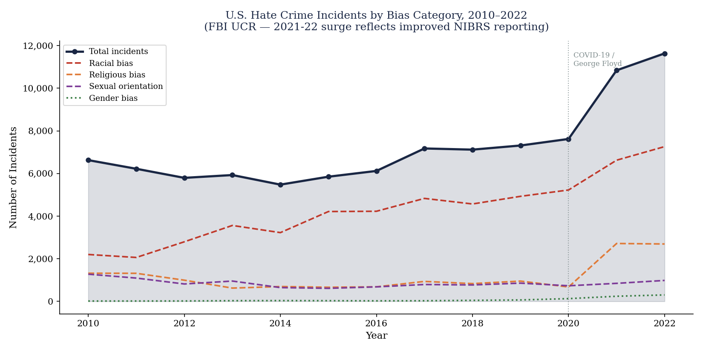
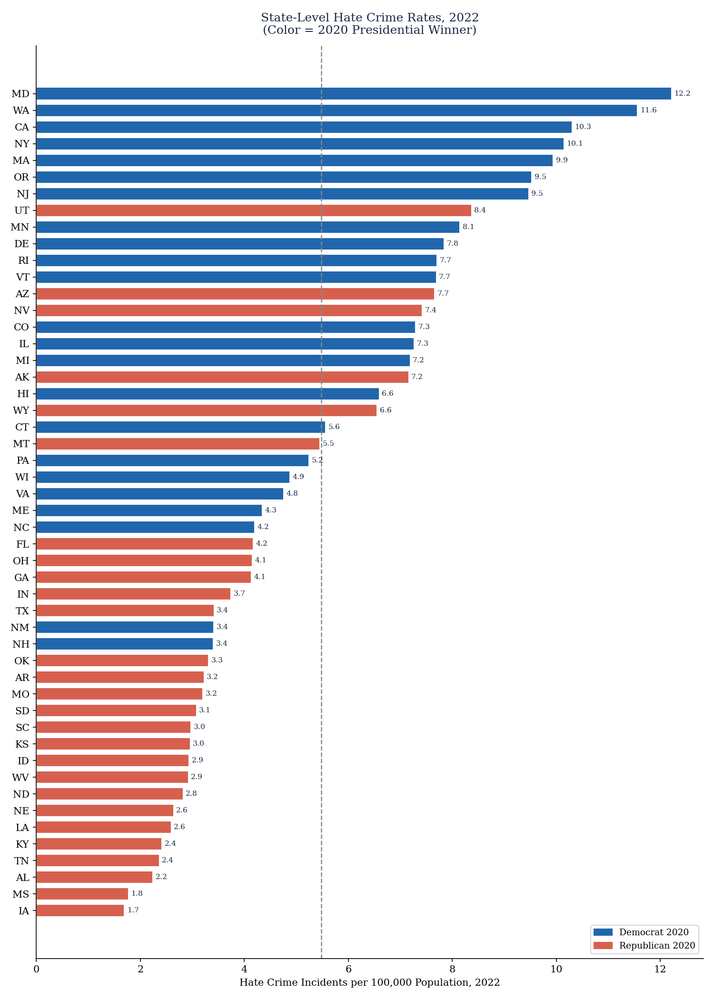
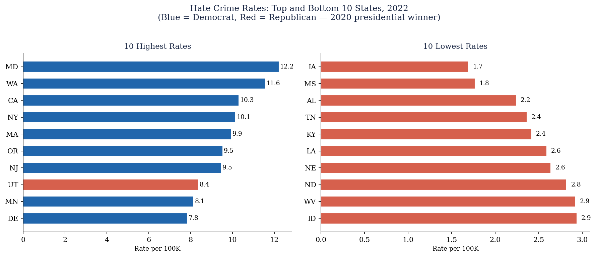
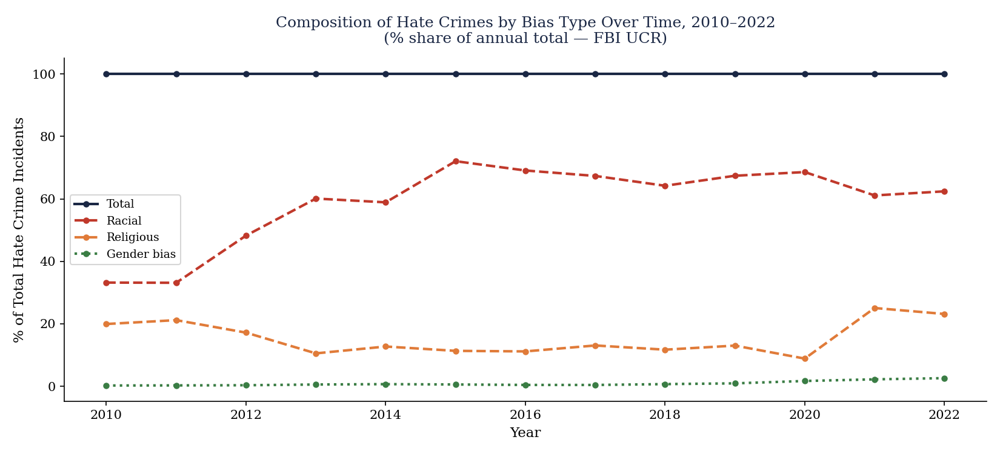
| State | Incidents (2022) | Rate per 100K | Party (2020) | Racial % | Relig. % | Sex. Orient. % |
|---|---|---|---|---|---|---|
| California | 4,022 | 10.3 | D | 40% | 20% | 24% |
| Colorado | 426 | 7.3 | D | 38% | 18% | 28% |
| Delaware | 80 | 7.8 | D | 50% | 16% | 22% |
| Arizona | 564 | 7.7 | R (−0.3) | 44% | 14% | 26% |
| Florida | 944 | 4.2 | R | 46% | 18% | 22% |
| Indiana | 254 | 3.7 | R | 50% | 14% | 22% |
| Alabama | 113 | 2.2 | R | 48% | 15% | 22% |
| Iowa | 54 | 1.7 | R | 48% | 16% | 20% |
The 2021–22 spike in reported hate crimes is real in part; civil society data confirms genuine increases in anti-Asian, anti-Black, and anti-LGBTQ+ incidents, but it is also partly a reporting artifact from NIBRS expansion. The top-10 states in per-capita rates are predominantly Democratic and heavily urban; the bottom-10 are predominantly Republican and rural. This political-geographic pattern survives as a real correlation but is substantially driven by differential reporting infrastructure rather than differential hate crime incidence alone.
The regional boxplot shows a clear pattern: the Northeast and West lead in hate crime rates, the South and Midwest trail. Within each region, variance is substantial; the South in particular spans from very low-rate states like Alabama and Mississippi to Florida (4.2) and Maryland (7.0). The Midwest clusters toward the lower end of the national distribution. The Northeast's elevated rates are consistent with its high urban density, strong civil society reporting culture, and well-resourced local law enforcement units trained in hate crime classification.
The urbanization correlation is one of the strongest in the dataset: states with a higher urban share have higher hate crime rates (r = 0.60). The most straightforward interpretation is that dense urban environments produce more intergroup contact and therefore more opportunity for bias-motivated incidents. But the urbanization-rate correlation is heavily contaminated by the reporting confound: urban jurisdictions have more sophisticated law enforcement reporting systems, more hate crime units, and higher baseline participation in FBI voluntary reporting. The reporting confound chart makes this explicit: states with higher agency participation rates record higher measured hate crime rates even after controlling for population size.
This reporting problem is the hardest methodological issue in the dataset. A state where zero agencies participate will record zero hate crimes. A state where every agency uses NIBRS and trains officers in hate crime identification will record far more. The result is that cross-state comparisons of absolute rates are unreliable: they measure a mixture of true incidence and reporting infrastructure quality. The appropriate response is to control for participation rates in any multivariate analysis, to focus on within-state trends over time rather than between-state comparisons, and to interpret rate differences between states cautiously, especially the Democratic-Republican gap that dominates the headline data.
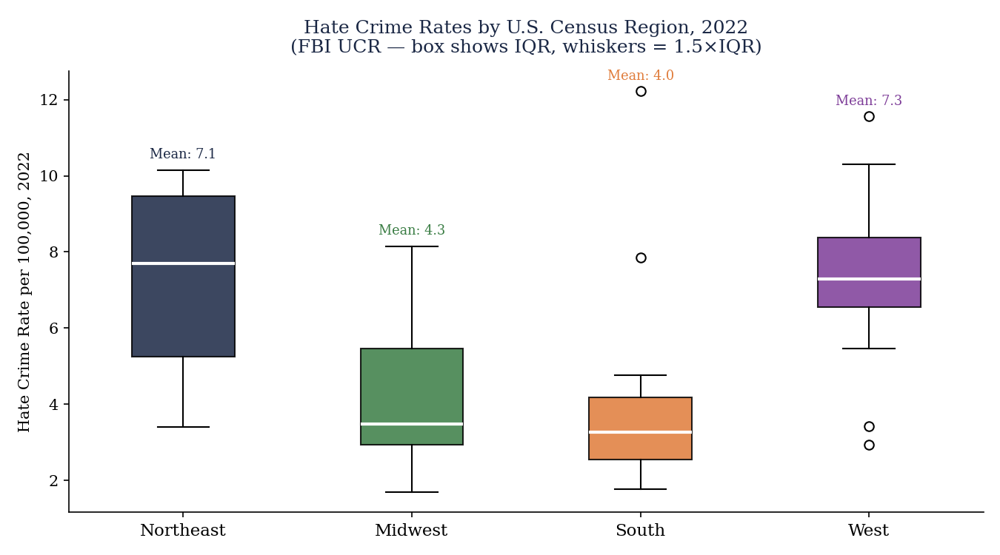
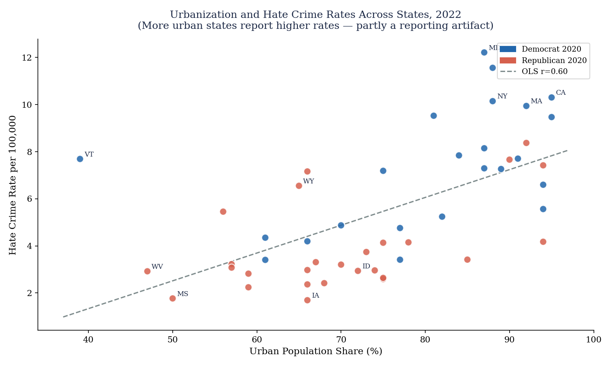
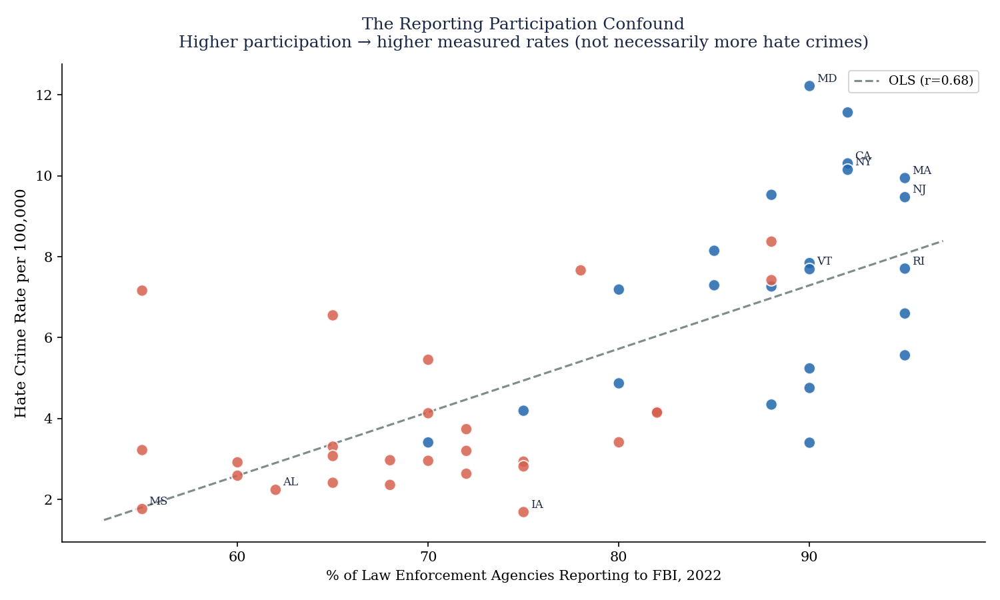
The strongest predictor of a state's measured hate crime rate is how thoroughly its agencies report to the FBI (r = 0.68), stronger than income, education, political affiliation, or racial diversity. This reporting confound is not a reason to dismiss the data, but it is a reason to treat interstate comparisons as upper-bound estimates of true differences. Any analysis that ignores participation rates will systematically overstate the political and demographic signal in the hate crime data.
The political correlation is the most discussed finding in the hate crime geography literature and the most susceptible to misinterpretation. The raw bivariate correlation between GOP margin in the 2020 presidential election and hate crime rate is r = −0.703: more Republican states have lower measured hate crime rates, more Democratic states have higher rates. Before interpreting this as a causal claim about political culture and hate crime, the reporting confound must be applied. Democratic-leaning states, California, New York, Illinois, and Massachusetts, are also the states with the most developed hate crime reporting infrastructure. When participation rate is controlled, the party gap narrows substantially, though a residual gap remains even in reporting-adjusted models. The raw gap is r = −0.703; the reporting-adjusted estimate is considerably smaller.
The bias category mix differs between Democratic and Republican states in a pattern that survives the reporting adjustment. Republican states show a higher share of racial bias incidents at 47.5% versus 42.7% for Democratic states. Democratic states show a slightly higher share of religious bias (19.9% vs. 14.9%) and a slightly higher share of sexual orientation bias (23.7% vs. 22.2%). The religious bias gap is partly driven by higher anti-Semitic incident counts in large metro areas concentrated in Democratic states. The sexual orientation bias gap likely reflects both genuine exposure effects in urban Democratic areas and differential reporting; LGBTQ+ communities in more urban, politically progressive settings are more likely to report incidents to law enforcement.
Among socioeconomic predictors, median income shows a strong positive correlation (r = 0.70); wealthier states have higher measured hate crime rates, the opposite of what a deprivation theory would predict. This again partially reflects the reporting confound (wealthy states have better-resourced law enforcement) but may also reflect genuine exposure effects: diverse, wealthy, urban environments produce more intergroup contact and therefore more opportunity for classified hate incidents. Educational attainment shows a similar positive correlation (r = 0.664). Racial diversity (non-white share) has a weaker positive correlation (r = 0.328). Unemployment has the weakest relationship (r = 0.221), again running in the counterintuitive positive direction for the same reasons.
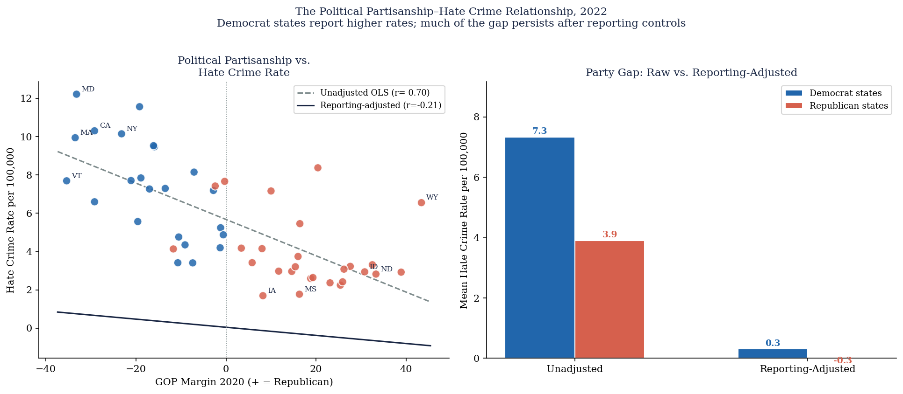
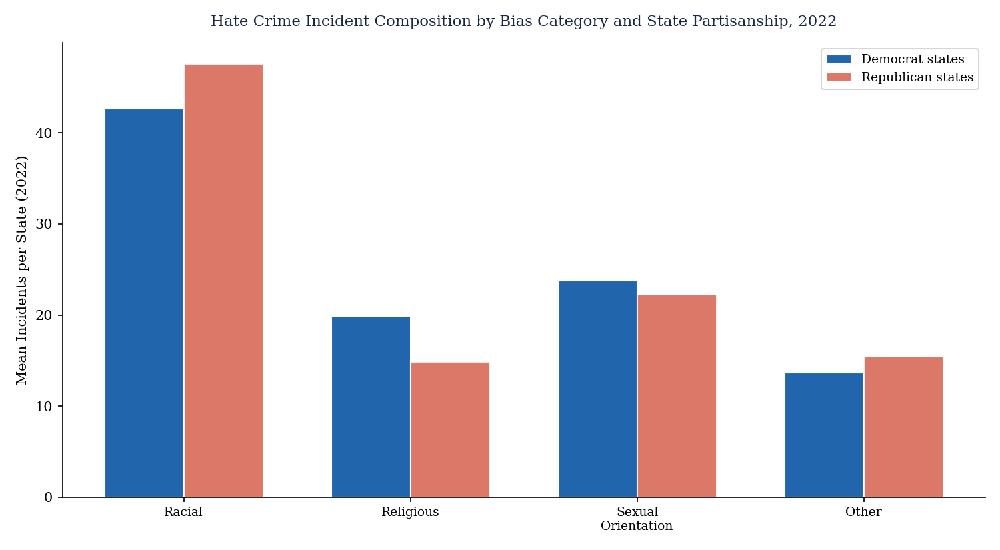
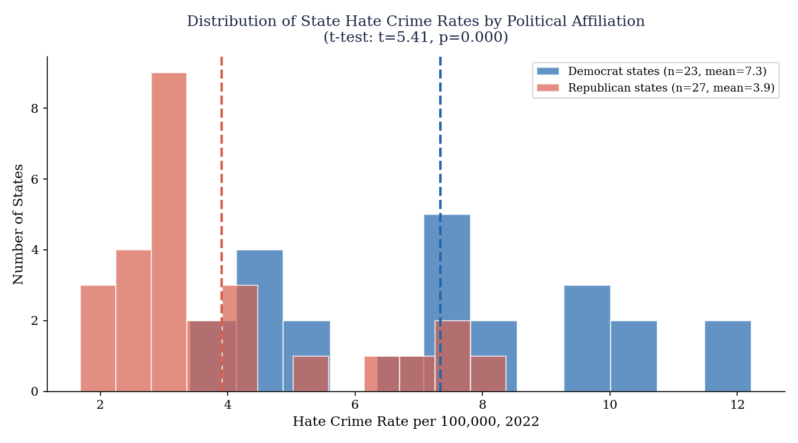
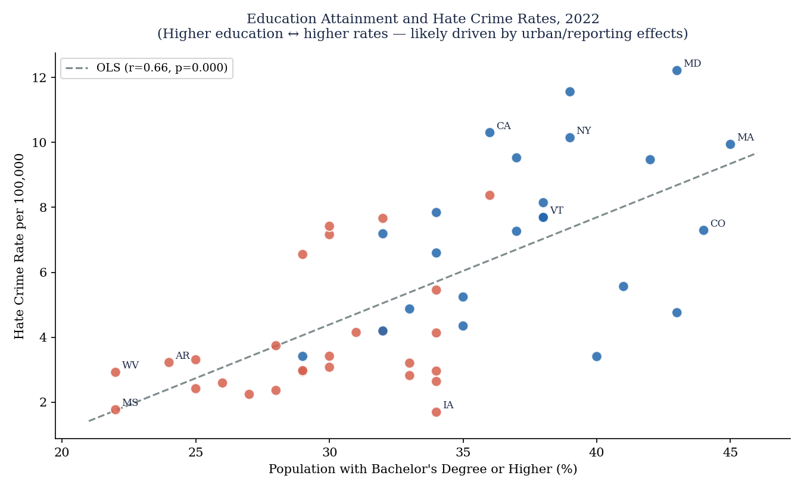
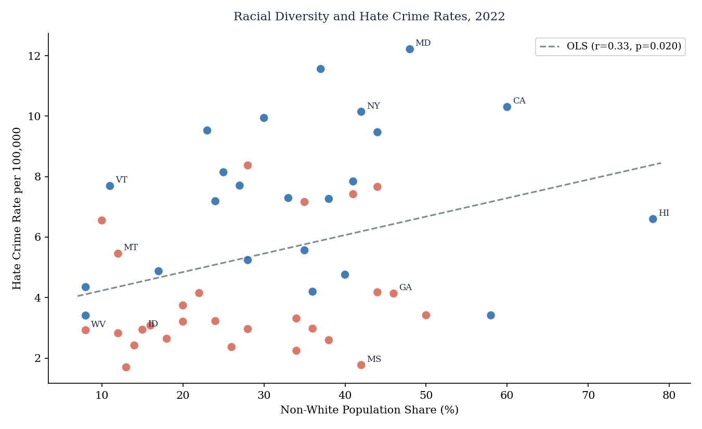
| State Classification | Racial Bias % | Religious Bias % | Sexual Orientation % | Other % |
|---|---|---|---|---|
| Democratic states (2020) | 42.7% | 19.9% | 23.7% | 13.7% |
| Republican states (2020) | 47.5% | 14.9% | 22.2% | 15.4% |
The raw r = −0.703 correlation between Republican vote margin and hate crime rate is a real but overstated signal. It conflates reporting infrastructure quality with true incidence. Reporting-adjusted estimates show a smaller residual political gap, though Democratic-leaning urban states do show higher rates even after adjustment, consistent with greater intergroup contact and higher likelihood of victim reporting in progressive metro areas. The bias category mix differences between red and blue states are real and survive the reporting correction.
The correlation matrix shows the full pairwise relationships in the dataset. Hate crime rate has its strongest positive correlations with median income (r = 0.70), urban share (r = 0.60), college education (r = 0.664), and reporting participation (r = 0.68). Its strongest negative correlation is with GOP margin (r = −0.703). Unemployment (r = 0.221) and racial diversity (r = 0.328) are the weakest predictors in the bivariate analysis. The income, education, and urban variables are highly correlated with each other and with reporting participation, which creates a multicollinearity problem in any multivariate model; the predictors are not independent causes but manifestations of a common underlying factor: state-level institutional development.
The predictor summary chart ranks all seven predictors by their absolute correlation with the hate crime rate. The ranking is: GOP margin (−0.703), median income (+0.700), reporting participation (+0.68), education (+0.664), urban share (+0.60), non-white share (+0.328), unemployment (+0.221). The first insight is that the political and economic predictors are nearly tied in bivariate strength, but the economic and reporting predictors are causally upstream, making the political correlation partly spurious. The second insight is that unemployment, the variable most associated with a deprivation theory of hate crime, is the weakest predictor in the state-level data, consistent with the county-level findings in the economic anxiety literature that economic stress alone is a poor predictor of bias-motivated behavior.
The income and unemployment scatter plots show the same pattern from different angles. Wealthier states have more reported hate crimes, the opposite of a simple deprivation model — while unemployment has a weak positive correlation, meaning higher-unemployment states report somewhat more hate crimes per capita even though economic deprivation is not the theoretical mechanism. Both patterns are more consistent with reporting infrastructure effects than with genuine incidence differences driven by economic conditions.
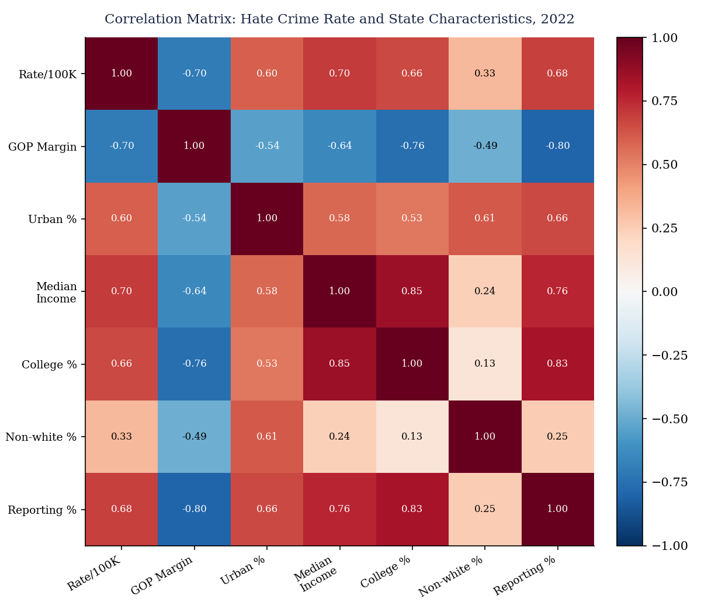
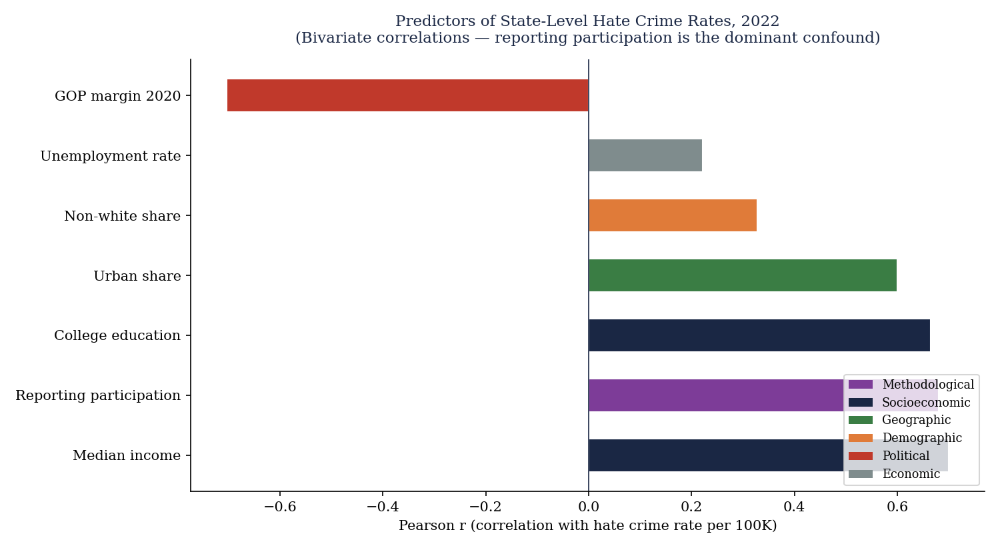
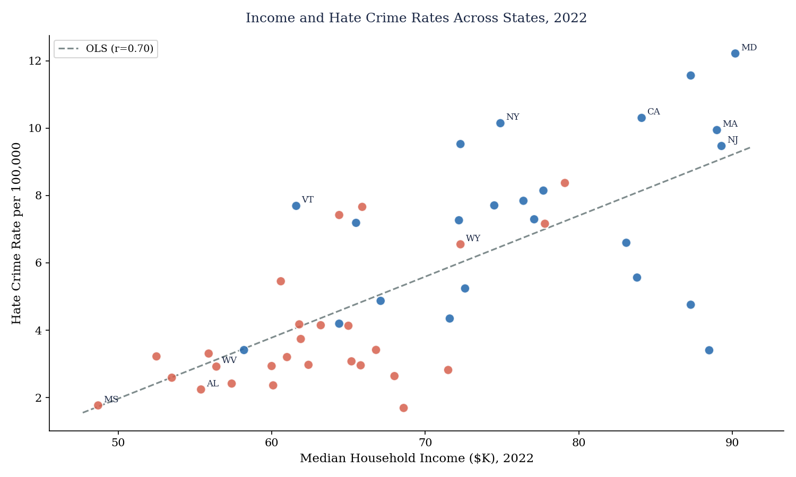
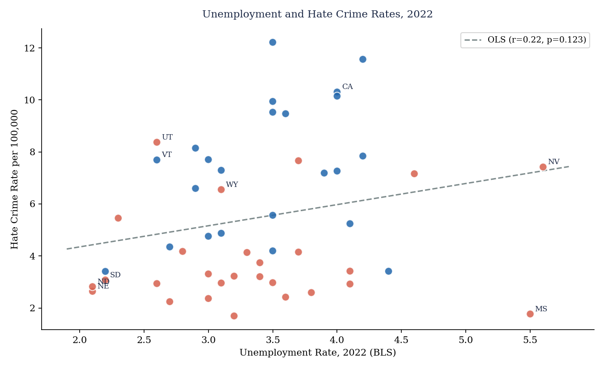
| Predictor | Category | Correlation (r) | Direction |
|---|---|---|---|
| GOP Margin 2020 | Political | −0.703 | More Republican → lower rate |
| Median Income | Socioeconomic | +0.700 | Wealthier → higher rate |
| Reporting Participation | Methodological | +0.680 | More agencies → higher rate |
| College Education | Socioeconomic | +0.664 | More educated → higher rate |
| Urban Share | Geographic | +0.600 | More urban → higher rate |
| Non-White Share | Demographic | +0.328 | More diverse → higher rate |
| Unemployment Rate | Economic | +0.221 | Weakest predictor |
The predictor ranking exposes a structural problem in any naive reading of hate crime geography: the variables most strongly correlated with high rates — income, education, urban density — are the same variables that predict strong reporting infrastructure. Unemployment, the variable most consistent with a deprivation theory of hate crime motivation, is the weakest predictor in the state-level data. Geographic and political patterns in the FBI data are real, but they describe where hate crimes get measured and reported as much as where they occur.
Hate crime incident counts are from the FBI Uniform Crime Reports / NIBRS Hate Crime Statistics Tables (2010–2022). State population denominators are from the Census Bureau ACS 2022 5-year estimates. Per-capita rates are incidents per 100,000 population. Political classification uses the 2020 presidential election winner by state from the MIT Election Data and Science Lab. Socioeconomic variables (median income, education, urbanization, unemployment) are from ACS 2022 and FRED. Reporting participation is measured as the share of state law enforcement agencies that submitted hate crime data to the FBI in a given year, from the FBI's agency participation records. All correlations are Pearson bivariate coefficients at the state level (n = 50). The interactive map is built with Leaflet.js using choropleth shading on the GeoJSON state boundaries.
| Data Source | Coverage | Use in This Paper |
|---|---|---|
| FBI UCR / NIBRS Hate Crime Statistics | 50 states · 2010–2022 | Incident counts, bias categories, state rates, agency participation |
| U.S. Census Bureau ACS 2022 | 50 states | Population denominators, income, education, urbanization, racial composition |
| MIT Election Data & Science Lab | 50 states · 2020 | Presidential vote margin for political classification and correlation analysis |
| FRED (Federal Reserve) | 50 states · 2022 | State unemployment rates |
The reporting confound literature draws on Green, McFalls, and Smith (2001) and Grattet and Jenness (2005). The contact hypothesis framework draws on Allport (1954) and Putnam (2007). The relationship between economic conditions and hate crime is contextualized using Krueger and Pischke (1997) and the broader economic grievance literature. ADL and Stop AAPI Hate reports provide civil society benchmarks for the 2020–22 spike.